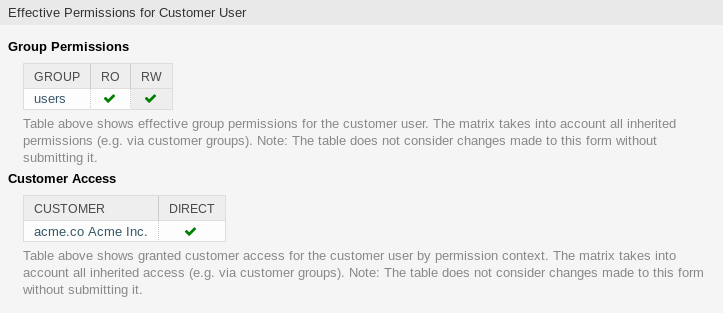

客户用户¶
您公司与谁打交道的记录需要更多关于个体的信息：实际位置（用于运输和账单目的）以及电子邮件和电话的联系信息。
OTRS提供了一种很好的方法来保存贵公司所服务的组织内的联系人的个人信息。 您可以根据需要向OTRS添加任意数量的个人连接。
使用此屏幕向系统添加 customer user 。 默认情况下，新的OTRS安装不包含任何客户用户。 客户用户管理屏幕位于* 用户、组和角色 组的 客户用户 *模块中。

客户用户管理屏幕
管理客户用户¶
注解
只能通过使用数据库后端来添加或编辑客户用户。 使用LDAP等外部目录服务将禁用客户用户管理功能。
若要添加一个客户用户：
- 点击左侧边栏的 添加客户用户 按钮。
- 填写必填字段。
- 点击 保存 按钮。

添加客户用户屏幕
警告
无法从系统中删除客户用户。 只能通过将 有效性 选项设置为 无效 或 临时无效 来停用它们。
若要编辑一个客户用户：
- 点击客户用户列表中的一个客户用户。
- 修改字段。
- 点击 保存 或 保存并完成 按钮。

编辑客户用户屏幕
若要查找一个客户用户：
- 在左侧边栏的搜索框中输入搜索字词。
- 单击字段右侧的放大镜图标或敲击一下
回车键。
注解
如果将多个客户用户添加到系统中，请使用搜索框查找特定客户用户。 默认情况下，仅列出前1000个客户用户。
可以通过将客户或客户用户添加到 组 来控制客户用户权限。 这可能会导致复杂的权限矩阵。 可以在 编辑客户用户 屏幕的底部检查客户用户的有效权限。

客户用户的有效权限小部件
参见
需要启用:doc:`customer-users-groups`才能使用此功能。
客户用户设置¶
添加或编辑此资源时，可以使用以下设置。 标有星号的字段是必填字段。
注解
这些是可用于内部数据库表的默认字段。
- 头衔或问候语
- 可以在此处添加一些名称前缀，如 Mr.、Dr.、Jr. 等。
- 名 *
- 客户用户的名字部分。
- 姓 *
- 客户用户的姓。
- 用户名 *
- 登录系统的客户用户的用户名。
- 密码
- 客户用户的密码。 如果留空，将自动生成。
- Email *
- 客户用户的电子邮件地址。
- 客户 *
- 客户用户所属的客户单位。 从 客户 列表中选择一个客户。
- 电话
- 客户用户的电话号码。
- 传真
- 客户用户的传真号码。
- 手机
- 客户用户的手机号码。
- 街道
- 客户的街道名称。
- 邮编
- 客户的邮编。
- 城市
- 客户总部所在城市。
- 国家
- 客户用户的国家/地区。
- 注释
- 向此资源添加其它信息。 为了更清晰，建议始终将此字段填充为带有完整句子的资源描述，因为注释也将显示在概览表中。
- 有效性 *
- 设置此资源的有效性。 如果此字段设置为 有效，则每个资源即可仅在OTRS中使用。 将此字段设置为 无效 或 临时无效 将禁止此资源的使用。